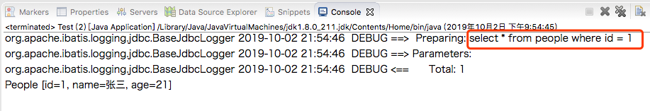
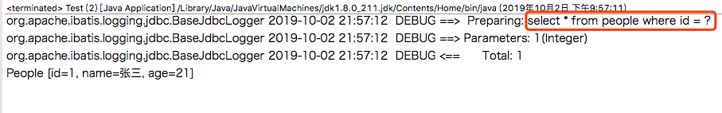

</select>
<select id="selById2" resultType="com.susu.pojo.People" parameterType="com.susu.pojo.People">
select * from people where id = ${id}
</select>测试的java代码：
People people = new People();
people.setId(1);
People one = session.selectOne("com.susu.mapper.PeopleMapper.selById2", people);
System.out.println(one);运行效果：

可以看到，合成的sql是: select * form people where id = 1
</select>
<select id="selById2" resultType="com.susu.pojo.People" parameterType="com.susu.pojo.People">
select * from people where id = #{id}
</select>运行效果：
